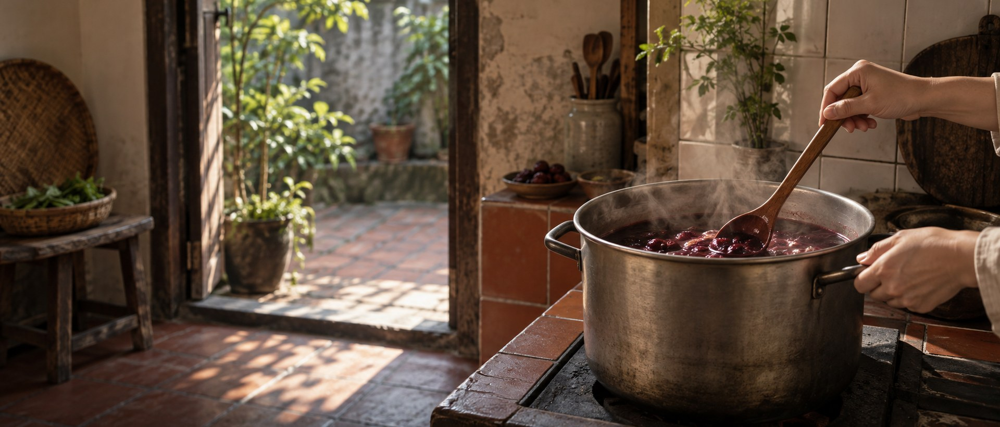

標誌就是把名字畫出來
冰——徽章中間那圈冷冷的白底。這是一瓶要冰著喝的飲料， 從裝瓶到你家門口，全程沒有離開過冷藏。
盞——中央那只高足的器皿。盞是拿來盛、拿來分的， 不是自己一個人捧著喝的容器。
紅——盞裡那抹朱紅，是八種食材熬出來的顏色。 連字標的「紅」字本身，都是紅的。
老配方，新做法。
古法與現代工法的交會，在一杯裡。
冰盞紅的配方，走的是傳統草本飲的路數——山楂、烏梅、洛神、陳皮、甘草、桂花、梅乾、冰糖，都是老早就在酸梅湯裡的東西。
但做法不是照著老方法一路熬到底。我們用現代的萃取方式控制時間與溫度，讓每一種食材該出來的味道，在對的時候被取出來——不多，也不少。
所以它喝起來不像一般的酸梅湯。不是更酸或更甜，是更清楚：每一層味道都站在自己的位置上。
三層不是同時到，是一層接一層打開。
望色・聞香・酌飲・暢喉
四步喝法，是我們建議的品飲順序。不趕，味道才會完整。
- 01望色Look先別急著喝。對著光看一下，那個紅寶石一樣透亮的顏色，是八種食材熬出來的。停幾秒，心也會靜一點。
- 02聞香Smell湊近聞。桂花的花香浮在最上面，底下是烏梅淡淡的煙燻氣。這是慢火才留得住的東西。
- 03酌飲Sip先小口。讓舌尖先碰到甘甜，再讓酸味慢慢上來。順序對了，就不會只剩下酸。
- 04暢喉Drink然後才大口。酸味湧上、略帶鹹甘，冰涼順著喉嚨下去。這時候，就是它最好喝的樣子。
一杯，是坐下來的理由
長大後，我們送過家人很多東西。
但真正讓人記住的，不是禮物有多貴，
而是一起坐下來聊聊天、喝一杯的那段時光。
所以我們做的是 1000ml，不是隨手瓶。一瓶倒得出好幾杯，倒給爸爸、倒給孩子、倒給來家裡坐坐的朋友。它不是為了讓一個人解渴，是為了讓一桌人有理由多坐一會兒。
從台南出發
冰盞紅是台南的品牌。這座城市夏天長、天氣熱， 也是最懂得吃、最挑嘴的地方之一——酸梅湯在這裡不是新奇的東西， 而是餐桌上本來就會出現的一杯。
我們在這裡熬煮、裝瓶、冷藏，然後直接送到你家。 從熬好到出貨，中間不會放太久——這是小批次才做得到的事。
為什麼是酸梅湯
酸梅湯不是什麼新發明。它一直都在——夏天的餐桌上、廟口的攤子上、長輩的冰箱裡。
我們做的只是把它認真做好：八種食材，分別秤量、洗淨、依序下鍋，用時間把味道熬出來， 然後在它最好喝的時候裝瓶、冰起來。
所以這不是一瓶要說服你什麼的飲料。它只是希望你打開冰箱的時候，有一瓶好喝的東西可以倒。
為什麼堅持一鍋一鍋熬
八種食材分別秤量、洗淨，依序下鍋，用慢火把料熬開。 不是把粉沖成飲料，也不是濃縮汁加水還原。
因為是手工小批次，一次做的量有限， 所以每一批都是熬好、裝瓶、立刻冷藏，直接出貨。 也因為這樣，偶爾會遇到來不及做、需要請客人稍等的時候。
保存期限 10 天， 短，但那就是沒有多餘處理的樣子。
放在冰箱，吃飯的時候倒一杯。
這就是我們想像中，它被喝掉的樣子。
還有很多想說的，寫在筆記裡
煙燻香從哪裡來、八種食材各自的角色、小批次的代價——七篇手記。
冰箱裡準備一箱
1000ml × 12 瓶｜NT$ 1,490／箱